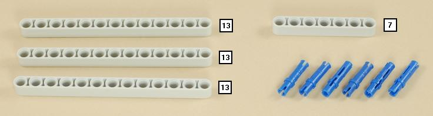
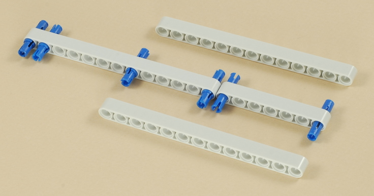
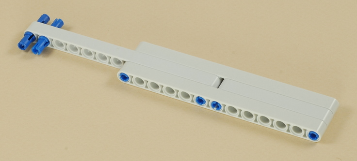
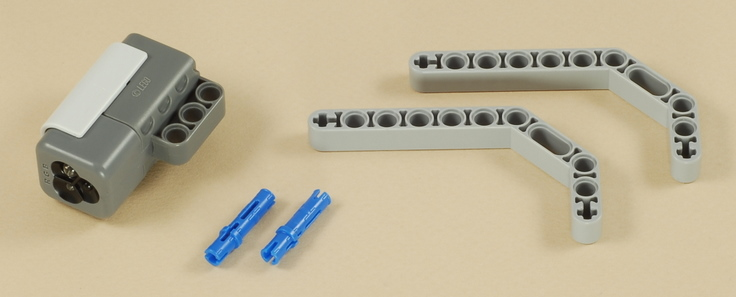
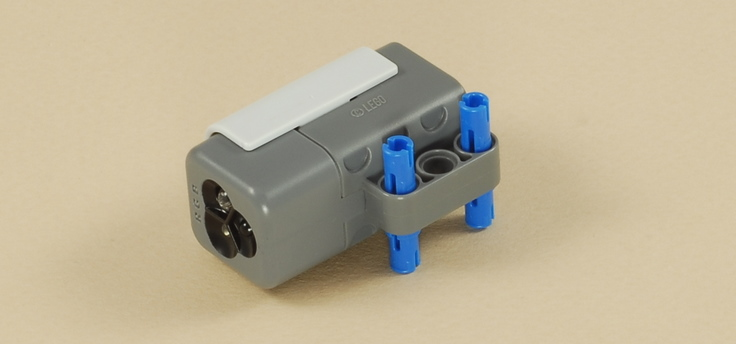
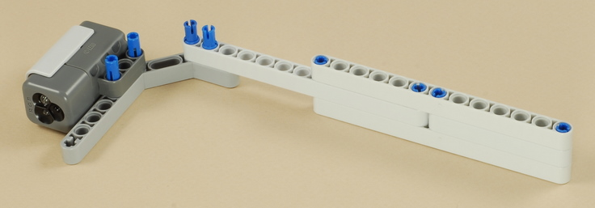
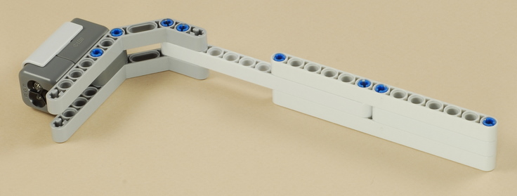
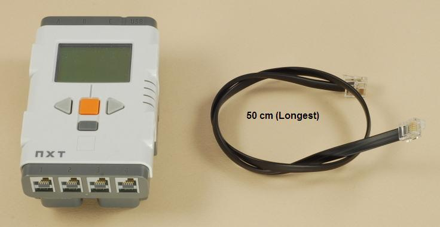
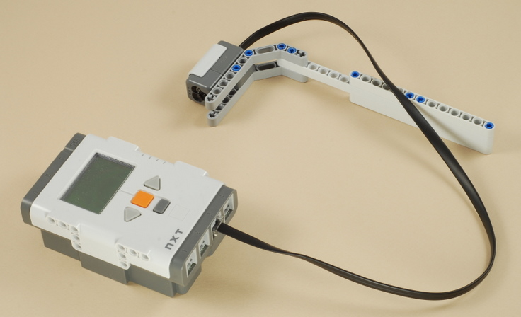

Fun Projects for your LEGO� MINDSTORMS� NXT!
|
|
Fun Projects for your LEGO� MINDSTORMS� NXT! |
| Light Meter |
|

1



2




3

|
Connect the Color Sensor to port 3 on the NXT. |

| Light
Meter Programming The LightMeter program can be used on any robot that has the Color Sensor connected to port 3 (and is easily modified for other ports if necessary). With the sensor-on-a-stick design above, you can easily point the sensor in any direction, or point it down to measure surfaces, using the gray angled beams to help keep a consistent distance from the surface. For any other robot using a Color Sensor in Light Sensor mode (such as the Line Follower), you can simply use the LightMeter program as-is to measure sensor readings seen by that robot. The brightness readings are continuously updated on the NXT screen. To toggle the sensor's LED illumination on and off, press the Left Arrow button. To rotate between Red, Green, and Blue LED illumination, press the Right Arrow button. |
Challenges
|
|
|